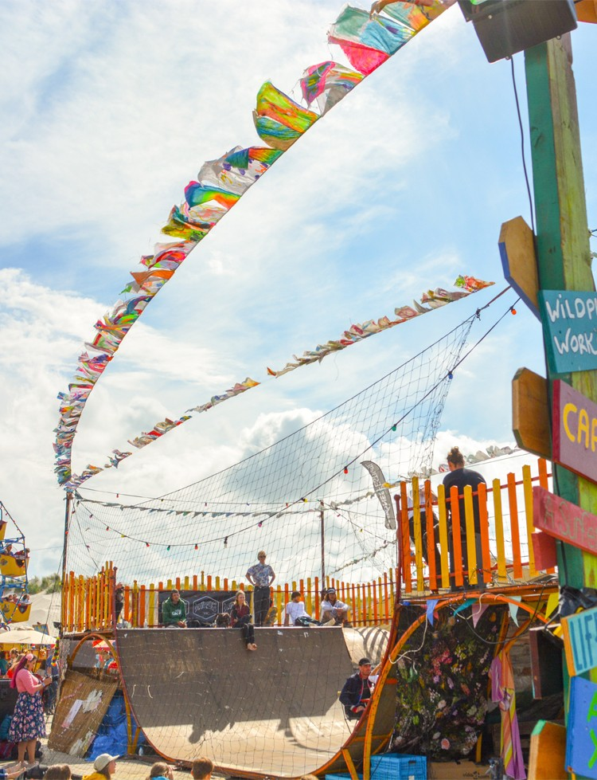
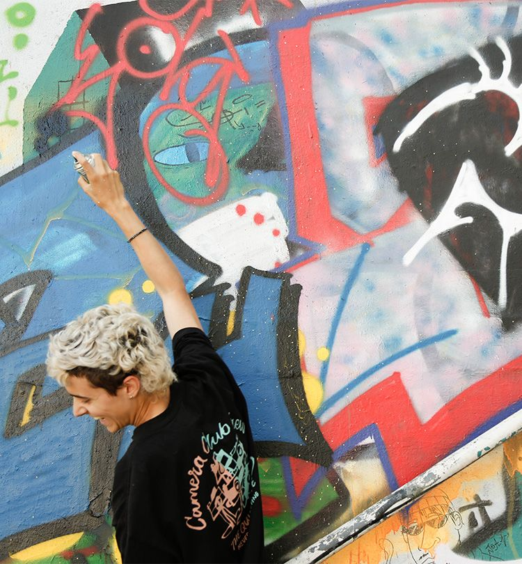
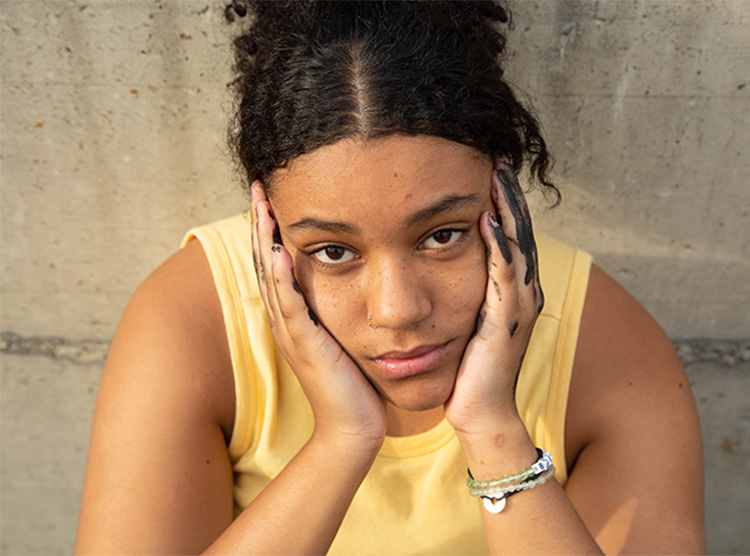
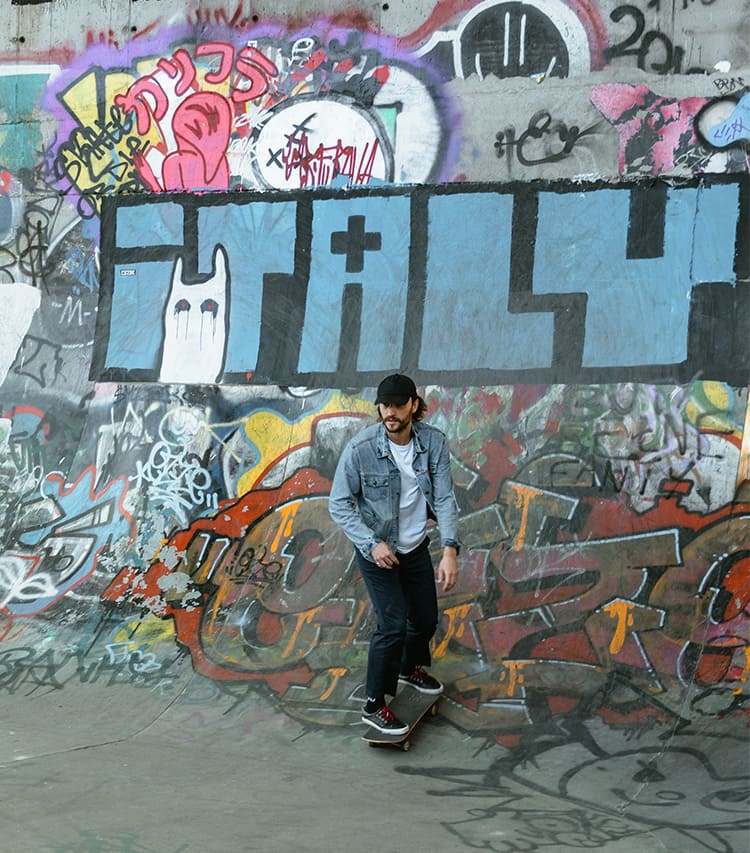
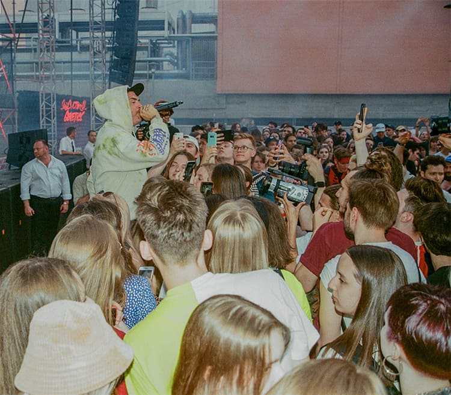
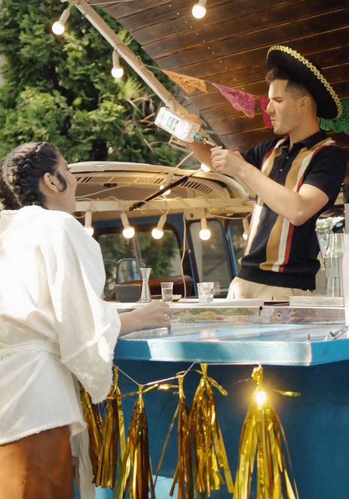

STREET JAM FESTIVAL

Le 15 octobre 2023, Vevey célèbre les
tendances actuelles en matière d'art urbain et de musique, et
rassemble une communauté de personnes partageant les mêmes intérêts.
Notre événement offre une variété d'activités pour les visiteurs,
notamment des démonstrations de skate
réalisées par des professionnels, des ateliers de
graffiti interactifs, des expositions
d'œuvres d'art urbain innovantes et
des performances musicales d'artistes
locaux et internationaux.
Notre objectif est de créer un espace pour que les artistes de rue et
les amateurs de culture urbaine puissent se rencontrer, partager leur
savoir-faire et leur passion pour l'art urbain et s'immerger dans une
ambiance urbaine unique.
Notre festival propose également une sélection de
stands de restauration proposant une
cuisine de rue authentique pour ravir les papilles des visiteurs.
TAGS/ GRAFFITIS/ STREET ART
09h00-11h00
Sessions libres
10h00-12h00
Atelier de graffiti interactif avec KiK
13h30-17h00
Démonstration de Manos68 et sessions libres
Nous sommes ravis de présenter notre invité d'honneur pour le Street Jam Festival, la célèbre graffeuse KiK.
Originaire de Lutry, KiK a commencé à expérimenter avec les bombes aérosols à l'âge de 14 ans et a depuis créé une réputation internationale pour son style unique et expressif. Son travail est influencé par la culture hip-hop, la street culture et l'art urbain contemporain, et est souvent caractérisé par des couleurs vives, des formes organiques et des détails saisissants.
KiK est une figure emblématique de la scène graffiti, et son travail a été présenté dans des expositions du monde entier. En plus de son travail de graffeuse, elle est également un mentor pour la jeune génération d'artistes urbains, organisant des ateliers et partageant son expérience avec la communauté.
Nous sommes honorés d'accueillir KiK en tant qu'invitée d'honneur de notre festival urbain annuel, et nous sommes impatients de voir son talent en action lors de notre atelier de graffiti interactif. Les participants auront l'occasion d'apprendre directement d'elle, de découvrir son processus créatif et de s'inspirer de son travail unique.
SKATE
09h00-10h00
Inscriptions et accueil des participants
10h00-10h30
Démo de skateboard par des professionnels
10h30-11h30
Atelier d'initiation au skateboard pour les débutants
11h30-12h30
Session de skateboard libre pour les participants
12h30-13h30
Pause
13h30-14h00
Concours de skateboard "Meilleure figure" pour les participants
14h00-15h00
Session de skateboard libre pour les participants
15h00-15h30
Démo de skateboard par des professionnels
15h30-16h30
Atelier de skateboard "Street Style" pour les skateurs expérimentés
16h30-17h00
Remise des prix pour le concours "Meilleure figure"
17h00
Fin de la journée
Veuillez noter que les horaires sont donnés à titre indicatif et peuvent être sujets à des changements. Les participants seront informés des horaires définitifs lors de leur inscription à l'événement.
MUSIQUE
15h00-17h00
Atelier de musique urbaine pour les amateurs de beatmaking et de rap
17h00-23h00
Concert de hip-hop avec des artistes locaux et nationaux
24h00
Fin de la journée
STREET FOOD
Notre festival vous propose une variété de stands de restauration sur place tout au long de la journée. Vous pourrez notamment découvrir :
- Oh my b!:
- Con cilantro wey :
- Frankie's Hot Dogs:
- Poke Paradise:
- La Bretagne ambulante:
- Smoothies Stop:
un camion de restauration rapide proposant des burgers artisanaux
avec des ingrédients frais et locaux.

un stand proposant des tacos et des burritos à la viande grillée ou
végétarienne, accompagnés de guacamole, de salsa et de sauces
épicées.

un stand proposant des hot-dogs traditionnels, avec une variété de
garnitures et des frites fraîches et croustillantes.

un stand proposant des bols de poke hawaïen, avec du poisson frais,
du riz, des légumes, des fruits et des sauces savoureuses.

un stand proposant des crêpes et des gaufres sucrées ou salées,
avec une variété de garnitures comme des fruits frais, du Nutella,
du fromage, des œufs et des légumes.

un stand proposant des smoothies et des jus de fruits frais, avec
des mélanges de saveurs originales et saines pour une pause
rafraîchissante.